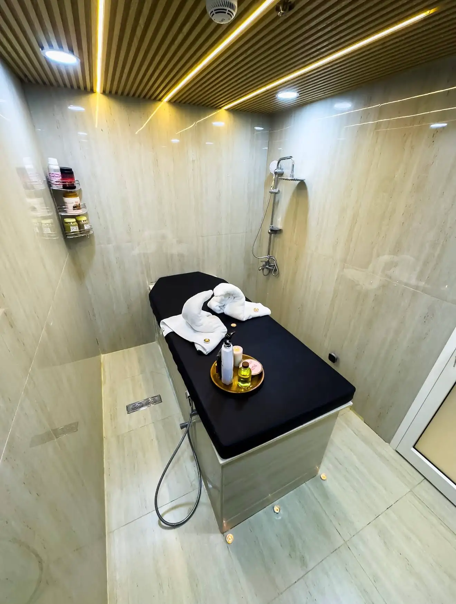

Moroccan Bath
A heritage hammam ritual — exfoliation, steam and renewal.
A heritage ritual,
done properly.
The Moroccan bath is one of the oldest grooming rituals in the region. We perform it the way it should be performed — black soap, steam, kessa exfoliation, mask, and finish with argan oil. No shortcuts. Available at our spa-led houses (Baniyas Spa, VIP Muroor).
Three steps, every time.
Steam
12–15 minutes in our hammam to open the pores.
Cleanse & Exfoliate
Black soap and kessa glove — the heart of the ritual.
Renew
Hydrating mask and argan oil finish — skin reset.
Our spa-led houses.
2 branches offer moroccan bath.
Common questions.
What is a Moroccan bath?
A traditional hammam ritual: 12–15 minutes of steam to open the pores, then black-soap cleanse, kessa-glove exfoliation, hydrating mask, and an argan-oil finish. The full ritual takes about 60 minutes.
How often should I do it?
Every 4–6 weeks aligns with your skin's natural cell turnover. More often than that doesn't add benefit; less than once a quarter and you start to notice the difference.
Is the kessa exfoliation painful?
No — brisk and firm, but not painful. The steam and black soap soften the skin first so the exfoliation removes only dead skin cells.
Where can I get a Moroccan bath?
At our spa-led houses: Baniyas Spa and VIP Muroor. Other branches don't have hammam suites.
Should I shave before or after?
After — wait at least 12 hours. Skin is sensitive immediately after the kessa, and shaving will irritate.
Book your chair.
Choose your branch and time — confirmation in minutes.
Book Now